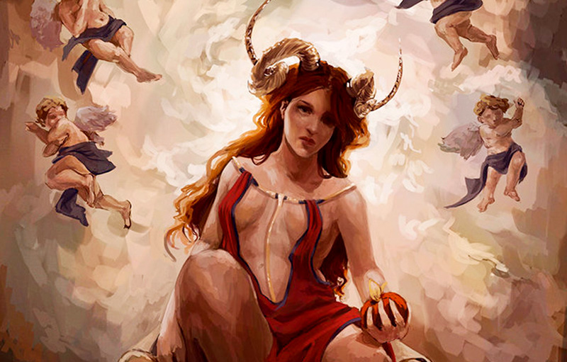

Citada em vários textos da antiguidade como o Antigo Testamento, o mito de Lilith é encontrado em muitas culturas. Na mitologia da Babilônia, Lilith era um demônio com corpo de mulher que vivia no inferno. Entre outros documentos onde sua história pode ser encontrada, há uma referência na Cabala, em que ela é apresentada como a primeira mulher de Adão, personagem bíblico do mito de Adão e Eva. Em uma das passagens da história bíblica, o demônio feminino é acusado de assumir forma de serpente e influenciar Eva a provar o fruto proibido.
Veja os links relacionados:
O mito de Lilith

Na Bíblia, os principais arquétipos femininos são o de Eva, a mulher que trouxe o pecado para a humanidade; e o de Maria, a mulher que trouxe ao mundo aquele que salvaria todos os homens do pecado. Porém, há na mitologia semita, uma terceira mulher cuja trajetória está diretamente ligada à do destino da humanidade: Lilith, a primeira esposa de Adão, a serpente que enganou Eva, o demônio da luxúria.
Existem algumas versões diferentes da lenda de Lilith, na mais aceita pelos estudiosos do mito, Lilith é criada por Deus da mesma forma como Adão, ou seja, moldada pelas mãos divinas, só que a partir de lodo e fezes. Os dois são o primeiro casal, responsáveis por cuidar do Éden. Só que com o tempo Lilith se rebela por não se conformar em estar em uma posição inferior a de seu marido, já que ambos foram criados a imagem e semelhança de Deus. A submissão é detectada inclusive sexualmente, onde Lilith exerce poder de sedução e entorpecimento orgástico em Adão e ele, por outro lado, se deita continuamente sobre ela, num sinal de domínio no coito e na relação, o que Lilith não aceita
Em busca de igualdade, Lilith entra em conflito com seu marido, contesta sua posição de inferioridade, e contesta também o criador, tendo que escolher entre se submeter ou deixar o jardim. Ela escolhe a segunda opção e parte para um exílio no Mar Vermelho, reduto de demônios. Durante algum tempo Lilith se vê impelida por anjos a voltar ao jardim, porém escolhe viver como demônio e abandona de vez Adão. Este, triste por perder sua mulher, adormece, e a partir de sua costela Deus cria Eva, uma mulher que saiu do homem, portanto dependente e submissa a ele, a que seria oficialmente a primeira esposa de Adão, a mãe da humanidade.
Após seu exilo no Mar Vermelho Lilith volta ao Jardim do Éden como um demônio, e na forma de uma serpente é responsável pela tentação de Eva, que levou toda a humanidade ao pecado. Com astúcia, Lilith confunde Eva e desperta nela o desejo de igualdade, não a igualdade com o homem, que a primeira mulher antes desejava, mas a igualdade com o próprio Deus.
Na Bíblia, não temos nenhuma referência à Lilith, e a serpente é identificada com o Diabo, mas no imaginário judaico, já associado às lendas mesopotâmicas, Lilith é o demônio da luxúria que tentava os jovens sexualmente à noite levando-os a sonhos eróticos e “poluição noturna”-, e mais tarde, com a maior sistematização das crenças de Israel, a lenda foi acoplada à ideia do Diabo e suas hostes. Por outro lado, o mito de Lilith, presente originalmente na cultura dos babilônicos e assírios, perdurou também na tradição oral dos hebreus e nos livros de sabedoria, considerados apócrifos pela cultura cristã. Além disso, a lenda tem sido retomada pelo estudo das religiões, religiões e mitologias comparadas, psicologia e pela astrologia e misticismo, onde Lilith é a lua negra, a face oculta lunar.
Feminismo: o legado de Lilith
A lição que tiramos dessa história toda é que a Bíblia não traz um relato fiel da criação segundo a crença hebraica. Muito provavelmente, a história de Lilith foi omitida da Bíblia para não alimentar a igualdade de direitos entre homens e mulheres, já que as civilizações antigas eram patriarcais e fortemente machistas. Portanto, Lilith foi a primeira mulher feminista da história (pelo menos segundo os hebreus).
Representação de Lilith
Saiba mais em:
Uma divindade pagã. Uma deusa do inferno. Um demônio